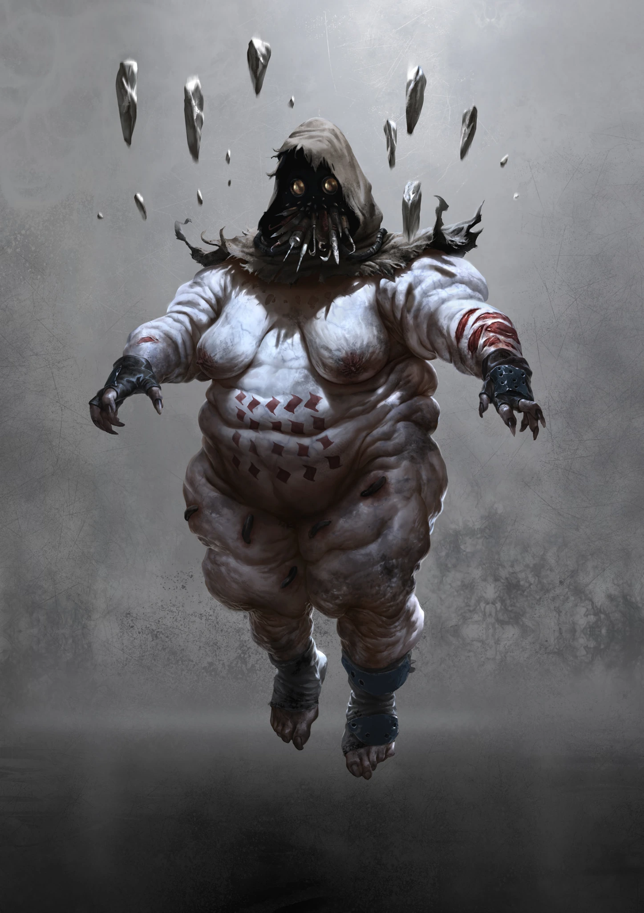
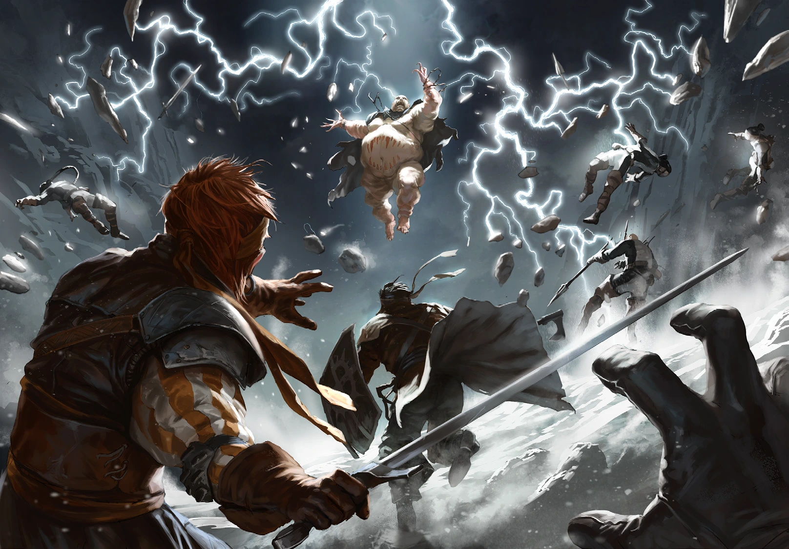

Primal
Energy coils around the solar plexus until willpower releases it into the world. Psychokinetics bend space, compress air, redirect matter, and build force structures, even as their own nerves, ribs, and organs are burned by the discharge.
PURGARE · FIFTH RAPTURE
Masters of the Elements
KatharSys pp. 313–317

RAPTURE
Energy coils around the solar plexus until willpower releases it into the world. Psychokinetics bend space, compress air, redirect matter, and build force structures, even as their own nerves, ribs, and organs are burned by the discharge.
Power and independence remain their core values. Even de-spored, they resist control and dependence, preferring isolation and raw self-determination to hierarchy.
Their parasites steal vitality from humans and animals. The Psychokinetic feeds on the bloated plague in turn, converting stolen life into healing and renewed spore infestation.
KNOWN PHENOMENA
Sends parasites to harvest communities and can devour the plague to recover Flesh Wounds and spore infestation.
Folds space around the Psychonaut into overlapping images that sharply raise Passive Defense.
Overloads organs and limbs to raise attack rolls, at the cost of equal Flesh Wounds.
Channels a close-range energy surge through the victim’s nervous system and damages Ego.
Adds damage taken to the Psychonaut’s next melee strike.
Releases a conical pressure blast whose damage falls with distance.
Crushes an area with air pressure, hindering everyone inside and causing Trauma at extreme Overload.
Rides force fields upward to escape melee reach.
Whips stones and debris into a lethal orbit that also serves as armor against ranged attacks.

VARIANTS
VARIANT: HYLIKOI
Mobile harvesters that wrap villages in Rifts, feed their parasitic plagues for months, then move on after the population is exhausted.
PROFILE: HYLIKOI INITIATIVE: 12D / 6 Ego Points SPORE INFESTATION: 12/16 SPECIALTY: Swarm Strength 4 ATTACK: Cannula spear, 7D, Distance 2 m, Damage 7, Special: If the Hylikoi rams this weapon into an enemy, blood is pressed into the hollow shaft. He can savor it. Per successful attack, he recovers (1) Flesh Wound that day. DEFENSE: Passive 2 (Deflecting electric field lines) Melee active (Block), Melee 7D Ranged Combat active – Mental 9D (No effect in Primal phase) MOVEMENT: 7D ARMOR: Cotter mask, Armor 0 CONDITION: 16 (Trauma: 8)
VARIANT: ARCHON
Enormous Psychokinetics that move through Filaments and condensed space, commanding immense parasite swarms and attacking almost entirely through Phenomena.
PROFILE: ARCHON INITIATIVE: 16D / 6 Ego Points SPORE INFESTATION: 22/22 SPECIALTY: Swarm Strength 14 ATTACK: Only uses Phenomena DEFENSE: Passive 3 (Spatial dissonance) Melee active – Ranged Combat active – Mental 12D (No effect in Primal phase) MOVEMENT: 9D ARMOR: Fat mass, Armor 2 CONDITION: 18 (Trauma: 8)